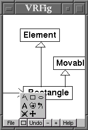
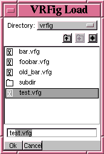
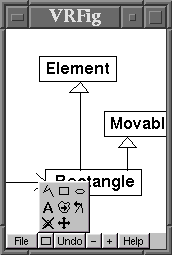
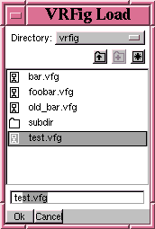

A vector graphics editor for PDA environment
Description
VRFig is a simple tool for drawing figures. It has been developed for PDA use and especially for the Agenda VR3 Linux PDA. The goal is to be able to plan things and sketch technical drawings on the road without always dragging a laptop computer around. The intended ultimate use could be sketching or browsing a software architecture diagram while sitting in a bus, for example. The biggest challenge is to overcome the inherent limitations of a PDA user interface.
Wouldn't it be easier to stick to pen and paper then? I don't believe myself that anything PDA based could come close to the usability of pen and paper (as long as we are talking about the palm sized PDAs). However, the one advantage VRFig has over pen and paper is that it is easier to import/export figures from/to desktop drawing programs. VRFig is not intended to be a stand-alone fully featured vector graphics editor but a kind of off-line terminal to a desktop drawing program.
License
VRFig, a vector graphics editor for PDA environment
Copyright 2001 Johannes Lehtinen
This program is free software; you can redistribute it and/or modify it under the terms of the GNU General Public License as published by the Free Software Foundation; either version 2 of the License, or (at your option) any later version.
See the license text for details.
Status
VRFig is currently under development. It is not yet ready for real intented use. These early releases are mostly targeted to other developers who are interested in participating the development process or who want to reuse VRFig source code. VRFig can be already used for drawing figures and it is able to save and load them but the set of drawing primitives is still rather limited. The user interface also needs work and the desktop side interface to desktop drawing programs (such as XFig) does not exist yet.
Author
The VRFig was written and is being developed by Johannes Lehtinen <johannes.lehtinen@iki.fi>. If you would like to contribute, please see the corresponding section of the README file included in the distribution archive.
The file chooser used in the VRFig is strongly based on the ESP Widget Set 2.0 by Easy Software Products. It has been just modified to match the VR3 look and feel (to use the flpda library). This code can be found in the subdirectory 'src/espws'. More information about the ESP Widget Set and the original source code can be obtained at the URL http://www.easysw.com/~mike/espws/ (update: the link is not valid anymore).
Download
To download the source code distribution select the package named vrfig-VERSION.tar.gz. If you don't want to compile the VRFig yourself then download the binary distribution vrfig-vr3-VERSION.tar.gz. The binary version is compiled for the Agenda VR3 Linux PDA and it includes the Expat XML parser shared library which is needed by VRFig. Note: You can not execute the binary version on your desktop computer!
- vrfig-0.2.tar.gz (130.8 kB)
- vrfig-vr3-0.2.tar.gz (130.0 kB)
Patches for VRFig 0.2:
- vrfig-0.2-001.diff.gz (6.2 kB)
- Vertex code cleanup. No (intentional) functional modifications but makes the code much more readable...
Screenshots
It is hard to understand the VRFig user interface by looking at the screenshots alone. For example, if you want to move an element (polyline, ellipse, rectangle) you select the move tool and then just "grab" the element on some line and move it to a new position. Anyway, here are the screenshots. The file chooser is based on ESP Widget Set by Easy Software Products. It is a totally separate piece of code so if you like it, it should be easy to use it in your program.
 


